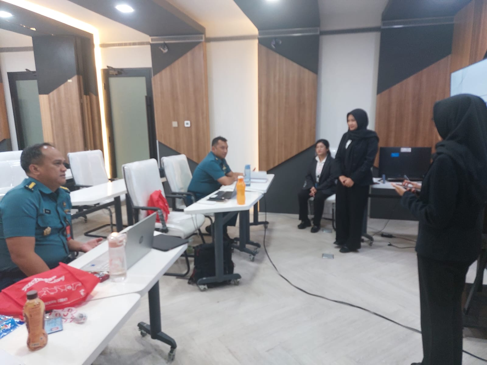
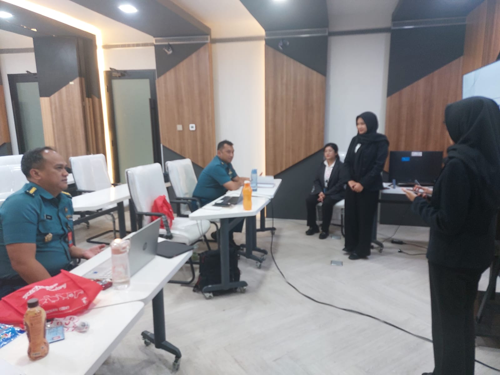
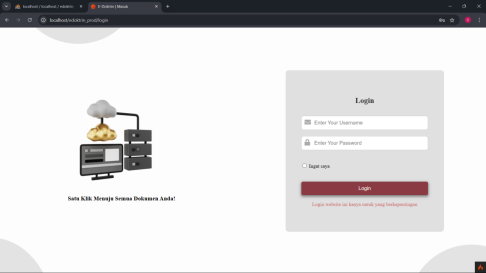
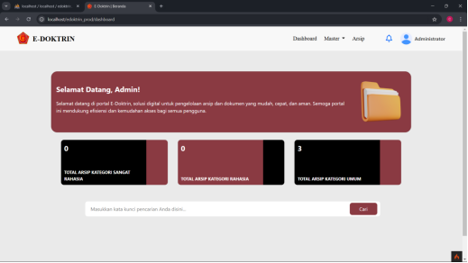
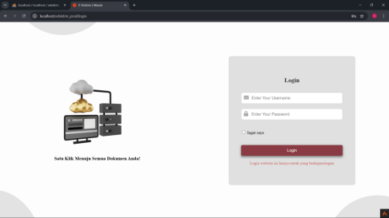
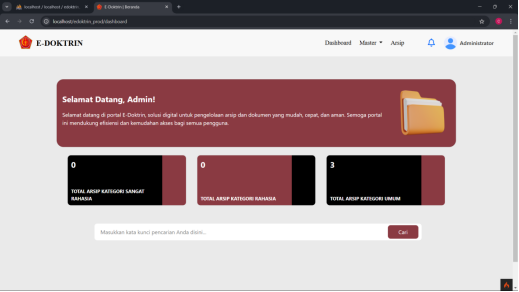

üìã About the Project
Developed the E-Doktrin website, a web-based archiving system using HTML, CSS (Bootstrap), and JavaScript integrated with CodeIgniter.
Designed a responsive and user-friendly interface (UI) for internal organizational use.
Collaborated with the team to complete the application development in 3 months, ahead of the scheduled timeline.
Developed the frontend using CodeIgniter 4 to ensure seamless integration with the backend system.
üîß Technologies Used
-
 CodeIgniter
CodeIgniter
-
 HTML
HTML
-
 CSS (Bootstrap 5)
CSS (Bootstrap 5)
-
 JavaScript
JavaScript
üó£Ô∏è Project Presentation Documentation
 

üñºÔ∏è Website
 


